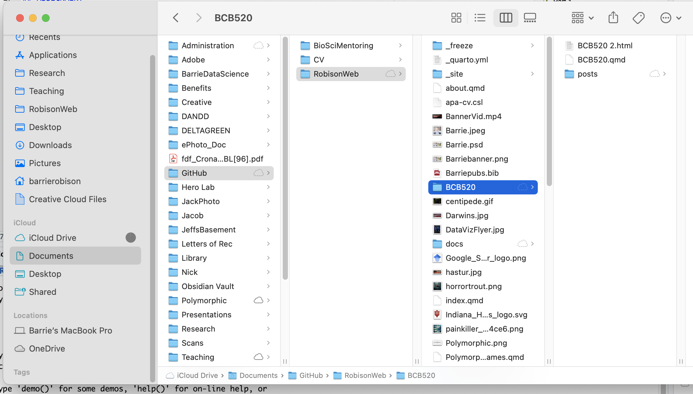

SUMMARY
Enough with the theory and conceptual mumbo jumbo! Let’s get down to making a visualization and posting it somewhere for all the world to see! The basic idea of this assignment is to set up a repository that will serve as an experimental portfolio, and then create your first novel visualization element inside the portfolio. Its gonna be fun! Or at least educational…
ASSIGNMENT
This assignment has two parts. The first part is technical. We’ll set up a Quarto Blog project as a new repository in your GitHub account. Then you’ll be a Blogger! Prestigious! The second part should be more fun. We are going to create your first Blog post as a visualization that explores an ACTION - TARGET pair relevant to your data set from Assignment 2.
PART 1 TECHNICAL SORCERY
1A - Create your BLOG project.
Hopefully by now you have created / dusted off / logged in to your GitHub account. Go ahead and log in to your account on the web and leave it open in a tab in your browser. There is a really great video about the next few steps (also linked below in RESORUCES) from Posit, but I’m giving you the condensed version here.
- Fire up RStudio.
- Go to File->New Project and then select NEW DIRECTORY.
- Now select QUARTO BLOG.
- You are going to create a the project in a new working directory. It is best practice to put this in a senstible directory structure on your local hard drive where your other GitHub repositories also live. Here is what mine looks like:
 4. I suggest making the directory name something informative, like BCB504Portfolio, but hey… If you want to call your repository HasturBoxerShorts I won’t stop you. 5. Most of you will select Knitr as your Engine, but Cody “Mr. Hacker McPythonPants” might select Jupyter. 6. Check Create a git repository. The other boxes are optional and we can talk more about them later. 7. Click CREATE PROJECT.
Now you’ve got a BLOG template all set up! Ha Ha! Onward to Internet Fame!
1B - Make the BLOG about you.
We won’t spend a ton of time here, because this will be an ongoing process. You’ll go and watch all those cool videos and tutorials this weekend to figure this out. But lets do a couple things.
- Maybe you should modify the
about.qmdfile so that your name is in there somewhere. - Maybe you should modify the
index.qmdfile with a better title in the YAML header. - Maybe you should navigate to the
postsfolder, open theWelcome to my blogfolder, openindex.qmdfrom that directory, and add a sentence or two.
1C - Customize your first post.
- Navigate to the
postsfolder, open thepost with codefolder, and openindex.qmd. - Replace ALL of the content of
index.qmdwith the most recent version of your.qmdfile from ASSIGNMENT 2. Keep the file nameindex.qmd. Save that file! - Move your data files to the
post with codefolder. - Render the index.qmd file from this folder. Hopefully it worked!
1D - Render the BLOG as a website.
- Save all the files you’ve modified.
- Go to the BUILD tab in the (probably) top right section of RStudio.
- Click RENDER WEBSITE.
- Click through your new Blog and see how it works!
1E - Push to GitHub.
There are quite a few ways to do this part. I’m going to use GitHub Desktop, but those video will show you other ways.
- Go to GitHub Desktop.
- Type some text in the summary box.
- Click COMMIT TO MASTER.
- Click PUSH ORIGIN.
- Go to your GitHub in your browser. You should see your new repository! Yay!
1F - Make it a website with GitHub pages.
- In your browser, click on your repository.
- Go to SETTINGS.
- Select PAGES.
- Set the SOURCE option to
Deploy from a branch. - Set the BRANCH to
masterand the directory todocs - Deploy that stuff and wait. Then visit your site!
PART 2 ELDRITCH VISUALIZATION RITUAL
2A Define your ACTION - TARGET pair(s)
In [LECTURE 3] we discussed the concept of Task Abstraction in which you define the viz task that you want to help the user accomplish. This was represented as sets of ACTIONS that the user would perform (e.g. Discover, Present, Browse, Identify) on TARGETS related to the data set (e.g. Trends, Attributes, etc.).
Think about one or two visualizations you wish to construct with your data, and try to define them in terms of ACTION - TARGET pairs. While you are at it, why don’t you update the index.qmd file of your BLOG POST with a new seciton at the bottom titled TASK ABSTRACTION, and put a sentence describing your visualizations and the ACTION - TARGET pairs they represent?
2B Construct your Visualization
Let’s get to work! Using whatever tools you can, code up your visualization in that new section of your BLOG post.
RESOURCES
A YouTube Video from Posit on Building your Data Science Portfolio
A fun Spotify example from TidyTuesday by Kaylin Pavlik.